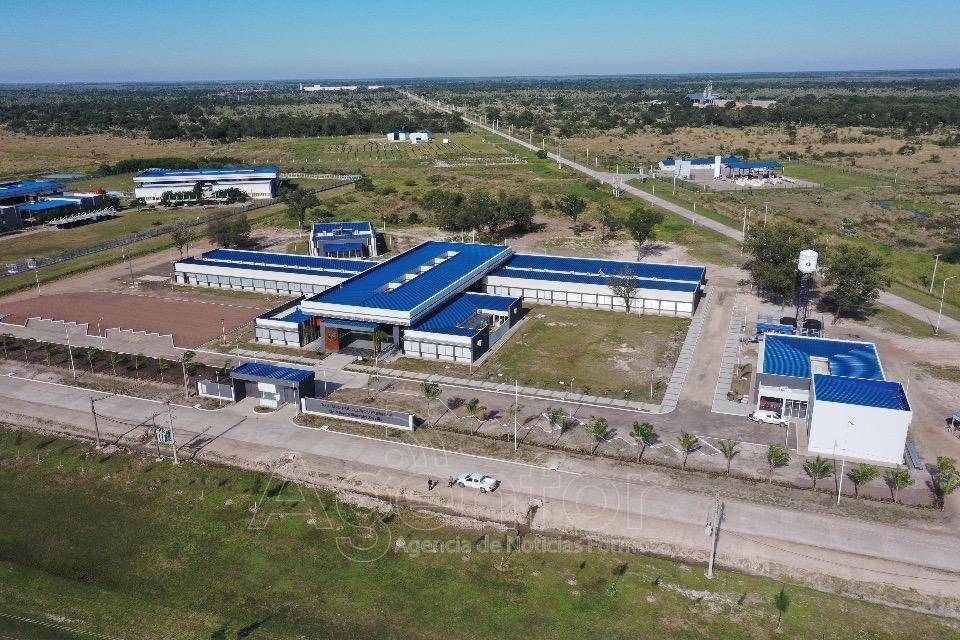
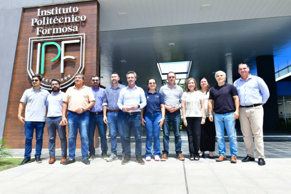
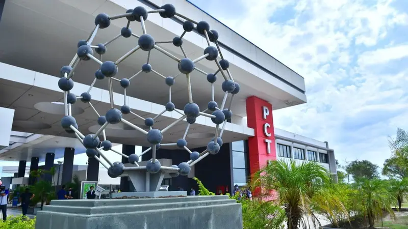

Tecnicatura en Desarrollo de Software
La carrera de desarrollo de software se centra en la creación, diseño, programación y mantenimiento de aplicaciones y sistemas informáticos. Combina conocimientos de lógica, matemáticas y distintas áreas de la informática como algoritmos, bases de datos y redes.
Duracion de la carrera: 2 añosRequisitos
- Secundario completo
- Interes por la tecnologia
- Ganas de aprender

Mision y Vision Institucional
El Instituto Politécnico Formosa tiene como misión formar profesionales técnicos altamente capacitados, con una sólida base científica y tecnológica, comprometidos con el desarrollo productivo, social y sustentable de la provincia, integrando educación, innovación e investigación aplicada; y como visión, proyectarse como una institución de referencia a nivel regional y nacional, reconocida por la calidad de sus egresados y su aporte a la innovación, capaz de responder a los desafíos tecnológicos y contribuir al crecimiento económico y al bienestar de la sociedad.

Autoridades Institucionales
Las autoridades del Instituto Politécnico Formosa están conformadas por un equipo directivo responsable de la gestión académica y administrativa de la institución, encabezado por un Rector o Director Ejecutivo, acompañado por coordinadores de carreras y responsables de áreas como docencia, investigación y extensión. Este equipo tiene la función de planificar, organizar y supervisar las actividades educativas, promover la vinculación con el sector productivo y garantizar el cumplimiento de los objetivos institucionales orientados a la formación técnica y el desarrollo tecnológico de la provincia.

Estructura Organizativa
El Instituto Politécnico Formosa cuenta con una estructura organizativa que incluye un equipo directivo encabezado por un Rector o Director Ejecutivo, acompañado por coordinadores de carreras y responsables de áreas académicas, administrativas y de investigación. Esta estructura se complementa con departamentos académicos, comisiones de evaluación y un consejo consultivo integrado por representantes del sector productivo, académico y gubernamental, lo que permite articular la gestión educativa con las demandas del entorno y promover la innovación tecnológica en la provincia.